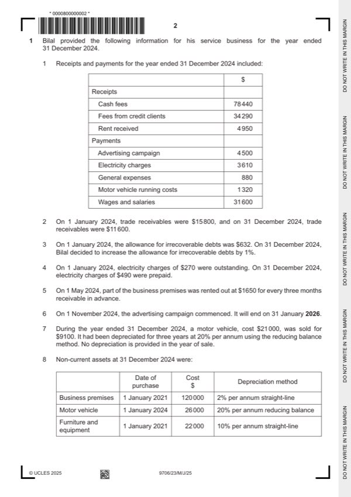

Question 1

Original paper page 2
Part 1(a) — solution
Prepare the statement of profit or loss for the year ended 31 December 2024. 14
Bilal
Statement of profit or loss for the year ended 31 December 2024
$ $
Revenue W1 108 530 (1)
Add other income
Rent receivable W2 4 400 (1)
Decrease in allowance for irrecoverable 52 (3) OF
debts W3
Mark points
- Include the ideas shown in the solution above.
Part 1(a) — solution
- End of 2021: $21 000 80% = $16 800
- End of 2022: $16 800 80% = $13 440
- End of 2023: $13 440 80% = $10 752
- Loss on disposal: $10 752 (1) – $9 100 = $1 652 (1) OF
- W6 $4 500 2/15 = $600 (1)
- W7 $3 610 – $270 (1) – $490 (1)= $2 850
Mark points
- End of 2021: $21 000 80% = $16 800
- End of 2022: $16 800 80% = $13 440
- End of 2023: $13 440 80% = $10 752
- Loss on disposal: $10 752 (1) – $9 100 = $1 652 (1) OF
- W6 $4 500 2/15 = $600 (1)
- W7 $3 610 – $270 (1) – $490 (1)= $2 850
Part 1(b) — solution
Prepare an extract from the statement of financial position at 31 December 7
2024 showing the assets section only.
Statement of financial position (extract) at 31 December 2024
$
Assets
Non-current assets
Business premises ($120 000 – $9 600) 110 400 (1)
Motor vehicle ($26 000 – 5 200) 20 800
Furniture and equipment ($22 000 – 8 800) 13 200 (1)
144 400 (1)
Current assets
Trade receivables ($11 600 – $580) 11 020 (1)
Other receivables W1 4 390 (2)OF
Cash at bank 8 950
Mark points
- Include the ideas shown in the solution above.
Part 1(c)(i) — solution
Answer: OR
Explain, with reference to an accounting concept, why Bilal: 2
maintains an allowance for irrecoverable debts.
Prudence concept (1)
Avoid overstating profit for the year / trade receivables (1)
OR
Matching/Accruals concept (1)
Costs and revenues are matched to the same accounting period. (1)
Accept other valid responses.
Mark points
- Correct result: OR
Part 1(c)(ii) — solution
Explain, with reference to an accounting concept, why Bilal: 2
always uses the same method of depreciation for each class of non-current
asset.
Consistency concept (1)
Enables results to be compared from year to year (1)
Accept other valid responses.
Mark points
- Include the ideas shown in the solution above.
Part 1(d) — solution
- Retains ownership of potentially valuable non-current asset (1)
- Rent received will help finance cost of lease of new premises (1)
- Less permanent arrangement, offering future flexibility (1)
- Will gain a potentially more valuable non-current asset (1)
- Will lose current rental income (1)
- Will incur costs in selling current premises and purchasing new premises (1)
- Will incur interest costs on bank loan (1)
Mark points
- Retains ownership of potentially valuable non-current asset (1)
- Rent received will help finance cost of lease of new premises (1)
- Less permanent arrangement, offering future flexibility (1)
- Will gain a potentially more valuable non-current asset (1)
- Will lose current rental income (1)
- Will incur costs in selling current premises and purchasing new premises (1)
- Will incur interest costs on bank loan (1)